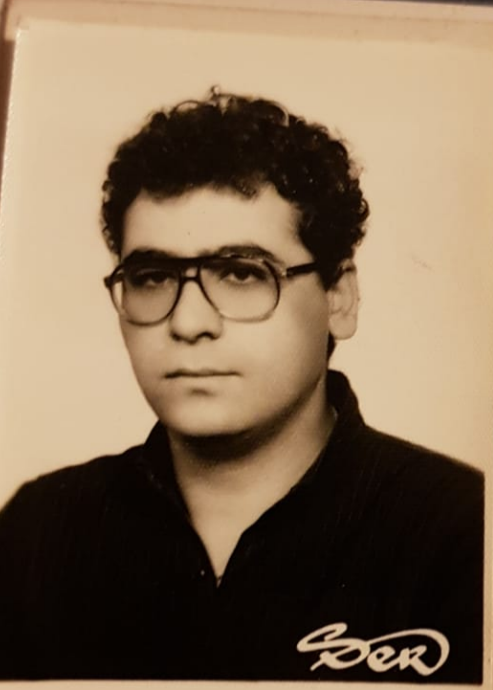
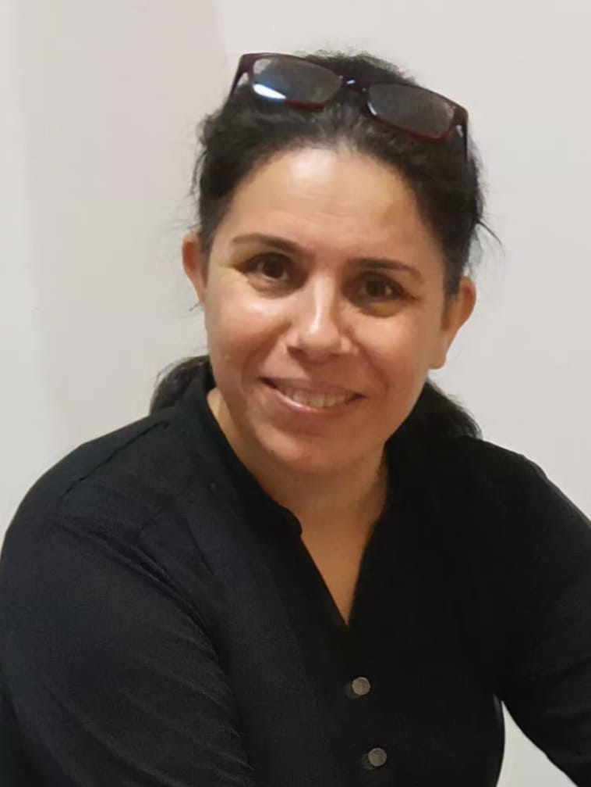
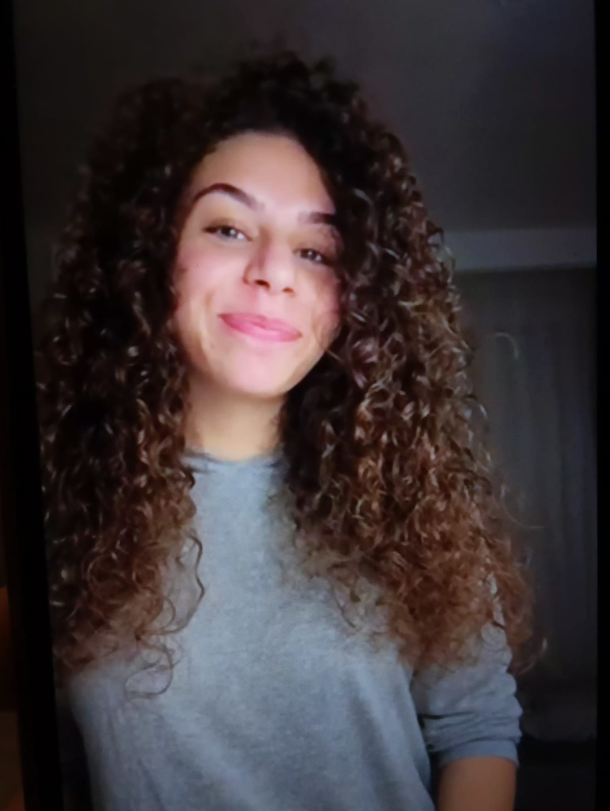

My Family
I come from a creative and talented family, each member contributing their unique skills to the arts and media industry in Türkiye.

Hakan Acarbay
Father
Producer at TRT
With years of experience in television production, my father brings stories to life through his work at TRT.

Arzu Acarbay
Mother
Makeup Artist at TRT
My mother's artistic talent shines through her work as a makeup artist, enhancing the visual appeal of TRT productions.

Yasemin Acarbay
Sister
Musician at Anadolu University State Conservatory.
My sister pursues her passion for music at the prestigious Anadolu University State Conservatory.